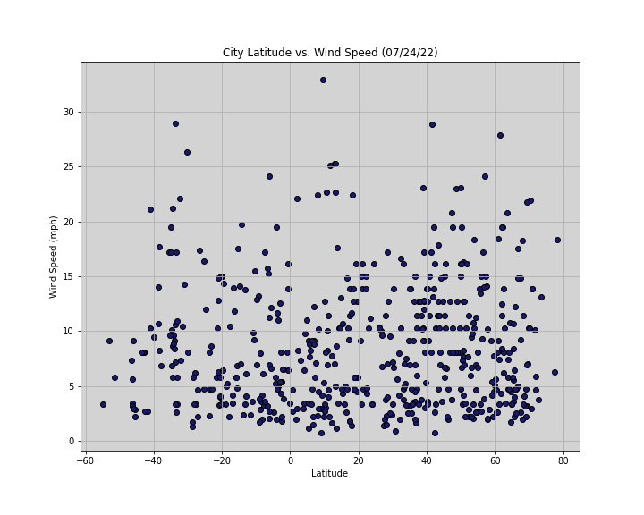

Wind Speed

Wind speed appears to slightly increase as we move away from the equator. However, to conclusively describe a pattern, we would need to go beyond the range in data to reach cities at closer to the poles. Only then can we have a sample large to confirm the pattern.
Visualizations